Which of the following options is/are true regarding the projection matrix?
It is a symmetric matrix.
It is an orthogonal matrix.
It is orthogonally diagonalizable.
It is always a rank 1 matrix.
Q3MSQ3 marksselect all that apply
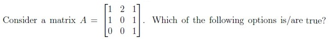
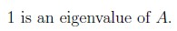
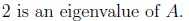
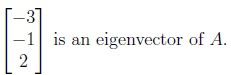
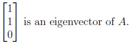
Q4MSQ3 marksselect all that apply
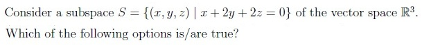
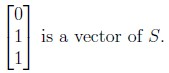
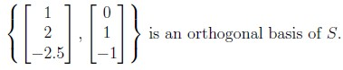
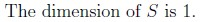
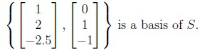
Q5MSQ3 marksselect all that apply
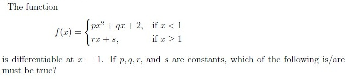
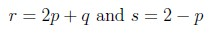
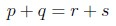
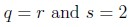
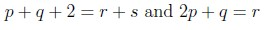
Q6MSQ3 marksselect all that apply
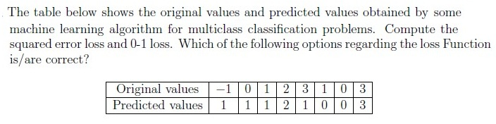
Square error loss ≤ 0-1 loss
Square error loss ≥ 0-1 loss
The 0-1 loss is 0.25
The square error loss is 1.25
Q7MSQ3 marksselect all that apply
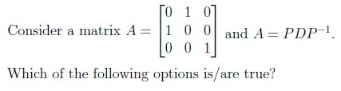
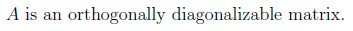
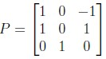
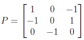
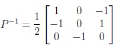
Q8MSQ4 marksselect all that apply
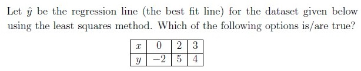
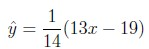
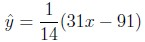
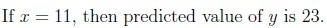
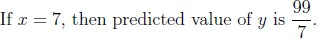
Comprehension passage - the questions below it refer to this
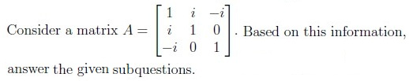
Q9MSQ2 marksselect all that apply
Which of the following options is/are true?
A*
= A, where A*
is conjugate transpose of matrix A.
A is a symmetric matrix.
A is a unitary matrix.
Columns of A are not orthogonal.
Q10MSQ3 marksselect all that apply
Which of the following options is/are true ?
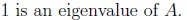
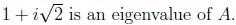
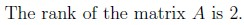
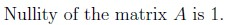
Q11MSQ3 marksselect all that apply
Which of the following options is/are true ?
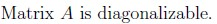
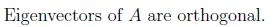
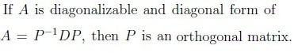
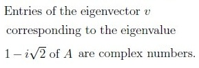
Q12MSQ2 marksselect all that apply
Which of the following is/are true?
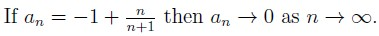
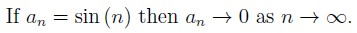
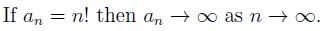
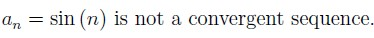
Q13SA3 marks
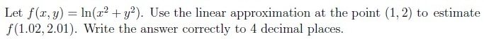
Q14MCQ2 marks
A hospital collects patient data including symptoms, vital signs, and lab test results. They want to find patterns to improve treatment plans. What type of task is clustering most suitable for?
Predicting the recovery time for a new patient.
Diagnosing diseases based on labeled medical records.
Grouping patients with similar symptoms and test results without prior labels.
Determining the most important variable for predicting disease.
Auto-generated summary from the source site. Handy as a checklist; the lessons above explain each idea from scratch.
Summary of Core Topics, Concepts, Principles, and Equations
Linear Algebra
Matrix Properties and Operations
Eigenvalues and Eigenvectors: For a matrix A, if Av=λv, then λ is an eigenvalue and v is the corresponding eigenvector.
Matrix Diagonalization: A=PDP−1, where D is a diagonal matrix.
Orthogonal and Orthonormal Matrices: A matrix A is orthogonal if ATA=I.
Symmetric Matrices: A matrix A is symmetric if A=AT.
Projection Matrices: A projection matrix P is symmetric (P=PT) and idempotent (P2=P).
Vector Spaces and Subspaces
Basis and Dimension: A basis for a vector space is a set of linearly independent vectors that span the space. The dimension is the number of vectors in the basis.
Null Space and Column Space: The null space of a matrix A is the set of all vectors x such that Ax=0. The column space is the span of the columns of A.
Orthogonal Basis: A set of vectors is orthogonal if each pair of vectors is perpendicular.
Special Matrices
Unitary Matrices: A matrix A is unitary if A∗A=I, where A∗ is the conjugate transpose.
Diagonalizable Matrices: A matrix is diagonalizable if it can be written in the form A=PDP−1.
Calculus
Differentiability and Continuity
Continuity: A function f is continuous at a point a if limx→af(x)=f(a).
Differentiability: A function f is differentiable at a point a if the derivative f′(a) exists.
Linear Approximation
Linear Approximation Formula: For a function f(x,y), the linear approximation at a point (a,b) is given by:
f(x,y)≈f(a,b)+fx(a,b)(x−a)+fy(a,b)(y−b)
Machine Learning
Loss Functions
Squared Error Loss: (yoriginal−ypredicted)2
0-1 Loss: 0 if yoriginal=ypredicted, otherwise 1.
Clustering
Clustering Tasks: Suitable for grouping data points without prior labels, such as grouping patients with similar symptoms and test results.
Sequences and Series
Convergence of Sequences
Convergent Sequences: A sequence an converges to a limit L if limn→∞an=L.
Divergent Sequences: A sequence that does not converge to any finite limit.